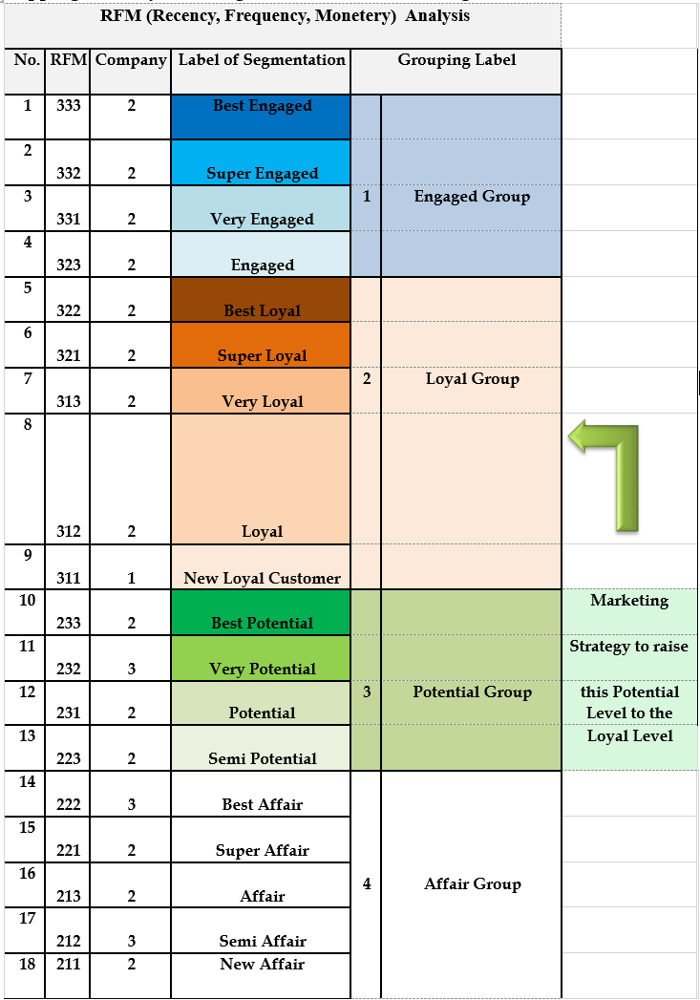
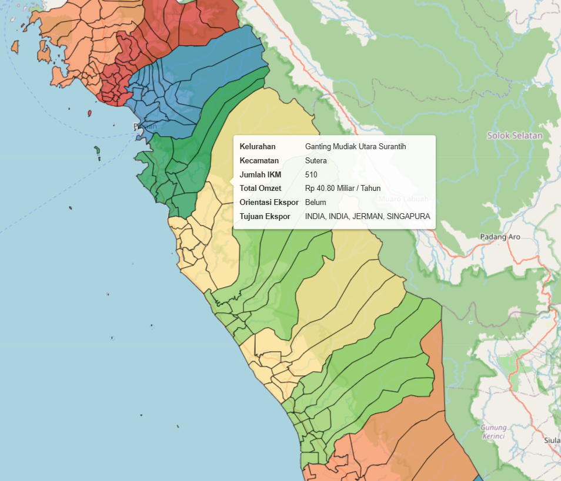
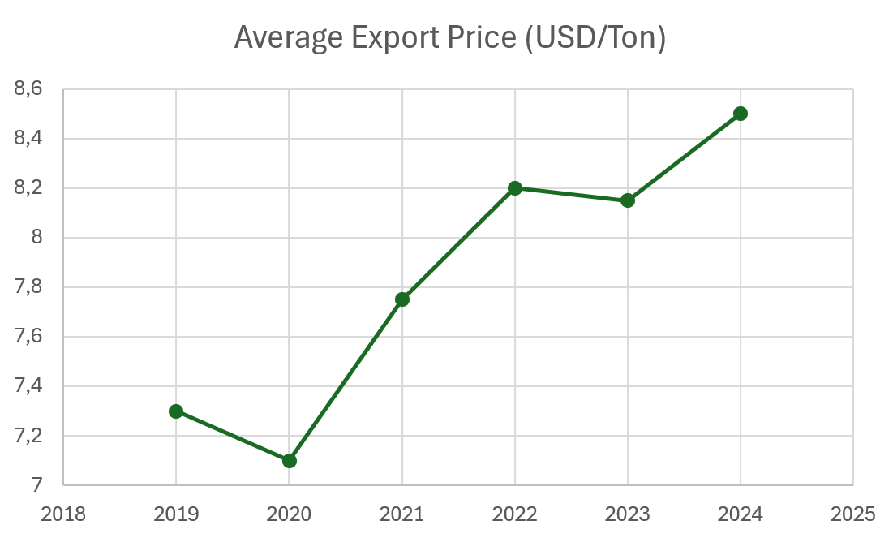

PROFESSIONAL EXPERIENCE
PTPN IV - PalmCo
Business Marketing Support Analyst focusing on operational analytics, forecasting evaluation, dashboard reporting, and business intelligence support.
COMPANY OVERVIEW
About The Company
PT Perkebunan Nusantara IV is a state-owned agribusiness enterprise specializing in plantation commodity management, operational performance, and sustainable business operations.
ROLE & DURATION
Business Marketing Support Analyst
Focused on operational analytics, forecasting evaluation, dashboard reporting, customer segmentation, and market-oriented data analysis to support business decision making.
Duration: October 2025 – April 2026
KEY RESPONSIBILITIES
Customer Segmentation
Conducted RFM customer segmentation analysis to identify behavioral patterns and support targeted marketing strategies.
Forecasting Analysis
Developed forecasting analysis using historical production and export datasets to support market monitoring and strategic planning.
Dashboard Reporting
Processed operational datasets and developed reporting dashboards to support data-driven monitoring and business evaluation.
TOOLS & TECHNOLOGIES
KEY CONTRIBUTIONS
Forecasting Accuracy
Developed a forecasting model achieving 1.13% MAPE to support market monitoring and strategic planning.
Operational Reporting
Performed data validation and reporting reconciliation to ensure operational data accuracy and reporting consistency.
Business Insights
Translated operational and market datasets into actionable insights to support business-oriented decision making.
DOCUMENTATION
Work Documentation & Visuals


